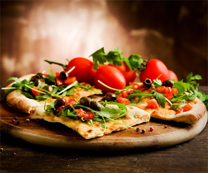

Как сделать пиццу
Как сделать пиццу дома лучше чем в ресторане. Может показаться невозможным, создать действительно хорошую пиццу в домашних условиях. Эта статья с секретами от лучших практикующих поваров. Следует отметить, что стили выпекания пиццы сильно отличаются друг от друга.
1. Корочка пиццы. Для лучшего изготовления корочки используйте лично приготовленное тесто Чем дольше вы даете тесту подниматься, тем более ароматным оно становится, нам понадобиться не более 18ти часов. Тесто можно замесить вручную или с помощью миксера. 
Ингредиенты:
3¾ чашки муки
2 чайные ложки морской соли
¼ чайной ложки активных сухих дрожжей
1 ½ чашки воды
1 столовая ложка оливкового масла
1 столовая ложка сахара
Для начала взбейте муку, соль и дрожжи в чаше. При перемешивании ложкой, постепенно добавить воду и оставшиеся ингредиенты. Накройте полиэтиленовой пленкой и дайте тесту подняться при комнатной температуре.
2. Соус
Лучший соус для пиццы сделан из качественных консервированных томатов. Мы сами приготовим аппетитный соус буквально за полчаса:
Ингредиенты:
3-4 очищенных помидор
1 зубчик чеснока
½ чайной ложки кошерной соли или морской Красный перец, по вкусу
½ чайной ложки сушеного орегано, если вам нравится пикантные соусы
Томаты мелко порубите или нарежьте на небольшие дольки. Потушите помидоры пока лишняя жидкость не выпариться, посолите, измельчите чеснок и добавьте в блюдо, перемешайте и снимайте с огня. Если соус на вкус слишком кислым, добавьте щепотку сахара.
3. Начинка Соус и сыр: Не используйте слишком много соуса. Даже если вы выпарили помидоры, это сделает вашу пиццу слишком сырой. Выберите сыр моцареллу средней влажности. Вы можете использовать любые ингредиенты которые нравятся вам или вашим гостям: колбаса, грибы, креветки, рыбу, маслины, курица, перец, зелень.
4. Выпекание Предварительно нагрейте духовой шкаф, от 300 до 500 градусов по Фаренгейту. Противень необходимо смазать растительным наслом, выпекая сладкую пиццу, или использовать смесь майонеза и кетчупа. Готовьте пиццу при более высокой температуре. Помните, что при выпекании пиццы некоторые печи достигают до 800 градусов. Когда печь нагрелась можете задвинуть пиццу в духовку. Пицца при высокой температуре может быть уже готова через 5-10 минут, среднее время выпекания 25 минут в зависимости от толщины слоя теста. В момент выпекания не забывайте следить за цветом теста, чтобы не сжечь его.